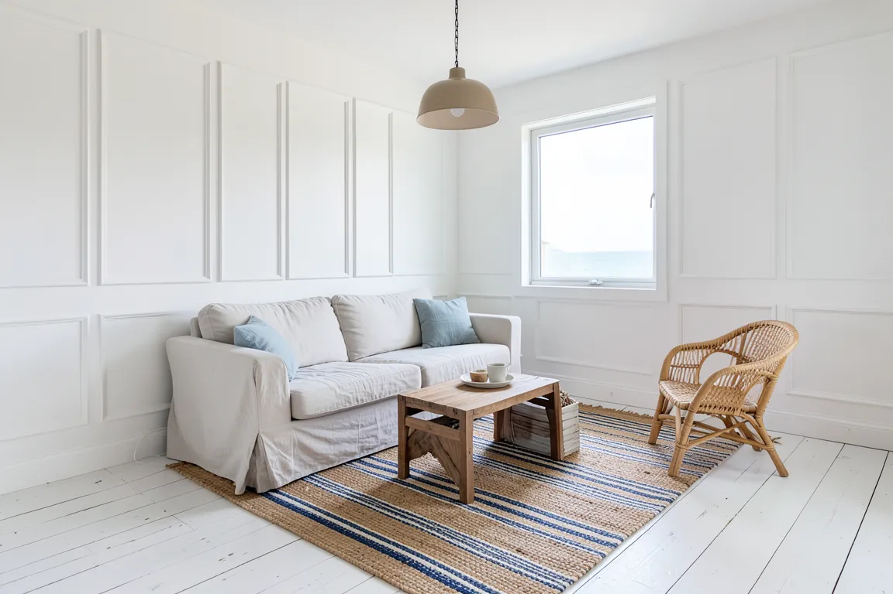

The airy summer-house room by the sea. White and sand-coloured walls, white-washed or grey-oiled wood, linen slipcovers and woven rope or rattan; one sea blue carries the accents, and the room opens to the water and the light.

Core thesis
A house by the sea takes its colours from sand, water and weathered wood, and its comfort from loose, washable fabric.
Design principles
Paint walls in white or sand at a light reflectance value of 75 or more, and panel one wall or the ceiling in painted tongue-and-groove boards.
Use white-washed or grey-oiled oak or pine with a weathered, matt surface.
Cover seats in loose linen or cotton slipcovers in white, sand or pale blue.
Add woven texture: rattan, wicker, jute, sisal and rope, at most one piece of each in a group.
Keep one blue family for the accents, from pale sky to deep navy, at 10% of the surface or less.
Open the room to the view: low furniture in front of the window and light curtains that pull fully clear.
Anti-patterns
Theme objects: anchors, life rings, shells on every surface, 'beach' word signs
More than one blue family, or blue together with a second strong hue